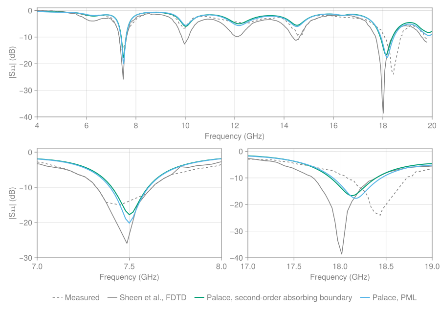
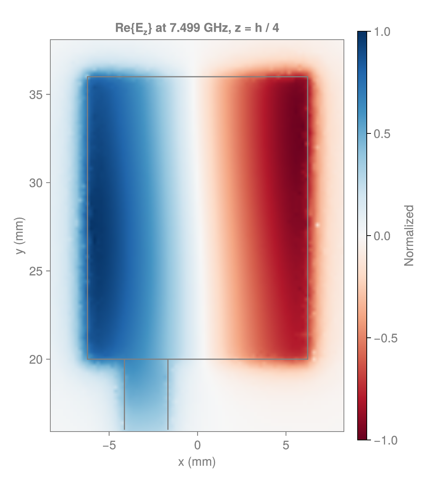

Microstrip Patch Antenna
The files for this example can be found in the examples/patch_antenna/ directory of the Palace source code.
This example recreates the reflection coefficient of the line-fed rectangular microstrip patch antenna of Sheen et al. [1], a common benchmark for full-wave solvers since its measured and computed $S_{11}$ from 0 to 20 GHz were published together. The substrate of the antenna runs through the truncation of the computational domain, which makes it a test of the truncation as well as of the antenna model: this example compares the second-order absorbing boundary with a perfectly matched layer (PML) extruded from the open faces of the box.
Geometry and model
The patch is $12.45\text{ mm} \times 16\text{ mm}$, on a substrate of relative permittivity $\varepsilon_r = 2.2$ and thickness $h = 0.794\text{ mm}$ over a ground plane. It is fed on its $12.45\text{ mm}$ edge by a $2.46\text{ mm}$ wide microstrip line, whose edge is $2.09\text{ mm}$ from the edge of the patch [1]. As in the FDTD model of [1], the feed line is $20\text{ mm}$ long and $S_{11}$ is referenced to $4\text{ mm}$ before the edge of the patch, 50 and 10 cells of $0.4\text{ mm}$ [2]. The metals are PEC sheets, and the substrate is lossless.
The mesh of mesh/mesh.jl is a box of $16{,}318$ tetrahedra with $6\text{ mm}$ between the metal and its open faces: the ground plane is the bottom of the box, and the substrate and the ground plane extend to the faces of the box, so that the model has an infinite substrate and ground plane. The feed line runs to the $y = 0$ face, which carries a wave port, $16\text{ mm}$ wide and $5\text{ mm}$ high, around the line. The mode of the port is computed with PEC on the edges of the port ("WavePortPEC" on the rest of the face), so that it is the quasi-TEM mode of a shielded microstrip line, with an effective permittivity of $1.89$ at 7.5 GHz (see Truncation for the size of the port). The de-embedding to the reference plane ("Offset": 16.0) changes the phase of $S_{11}$ only, since the line is lossless.
The other faces of the box, and the rest of the $y = 0$ face, are open: in patch_antenna.json, they are a second-order absorbing boundary,
"Absorbing": { "Attributes": [6, 7], "Order": 2 }and in patch_antenna_pml.json, a PML is extruded from the top, the two sides and the back of the box (attribute 7), while the rest of the $y = 0$ face keeps its absorbing boundary:
"Absorbing": { "Attributes": [6], "Order": 2 },
"PML": [{ "Attributes": [7], "Thickness": 4.0, "Layers": 4,
"Center": [[0.0, 0.0, 0.0], [0.0, 0.0, 0.794]] }]The four faces of attribute 7 make one box-shaped layer, the Cartesian PML of the box grown by $4\text{ mm}$ on these faces, with its edge and corner regions (see Extruded perfectly matched layer). Its nodes move away from the "Center", a segment through the substrate on the ground plane and on the port face, so that the layer ends flush with the ground plane and with the $y = 0$ face, whose boundary conditions continue across its ends, and the substrate stays flat in the side layers. The edge and corner regions of the layer are made of the columns of the boundary elements next to the edges between the open faces, so the mesh is refined to $1\text{ mm}$, the element size of the layer, along these edges.
The adaptive frequency sweep from 4 to 20 GHz uses second-order elements. It takes 11 s on 16 processes with the absorbing boundary ($111{,}318$ unknowns), and 71 s with the PML ($187{,}166$ unknowns, with $5{,}328$ prisms in the layer). Both use the complex coarse solve ("ComplexCoarseSolve": true), since the box is two wavelengths across at 20 GHz. The sweep's tolerance ("AdaptiveTol": 1.0e-2) and the tolerance of the error estimate, which this example doesn't use ("EstimatorTol": 1.0e-2), are looser than the defaults, which changes $S_{11}$ by less than 0.01 dB. The script patch_antenna.jl runs both, prints the resonances and draws the figures below:
julia --project=examples -e 'include("examples/patch_antenna/patch_antenna.jl"); generate_patch_antenna_data()'Results
The measured and the computed curves of [1] are digitized from its Fig. 5 in sheen1990_s11.csv, to about $\pm 0.03\text{ GHz}$ and $\pm 0.3\text{ dB}$ (the file gives the method and a check against the same curves reproduced in [2]).

Palace follows the shape of the measured curve over the band, with either truncation. The minima of $\lvert S_{11} \rvert$, as frequency (GHz) and depth (dB), are:
| Resonance | Measured [1] | FDTD [1] | Palace, absorbing boundary | Palace, PML |
|---|---|---|---|---|
| 1 | 7.45, -15.0 | 7.49, -25.9 | 7.502, -17.76 | 7.499, -20.15 |
| 2 | 9.94, -6.7 | 9.97, -12.6 | 10.019, -5.95 | 10.020, -5.55 |
| 3 | flat, -4.3 to -4.7 | 12.10, -9.9 | 12.170, -4.99 | 12.173, -5.66 |
| 4 | 14.55, -9.8 | 14.46, -11.2 | 14.525, -5.55 | 14.516, -6.02 |
| 5 | 18.44, -24.0 | 18.02, -38.7 | 18.130, -16.68 | 18.171, -17.69 |
The first resonance is the mode across the $12.45\text{ mm}$ width of the patch, which the offset of the feed line excites. The normal electric field in the substrate shows its half wavelength across the patch (generate_field_plot() in patch_antenna.jl, with the PML):

The first resonance is $0.7\%$ above the measured one and $0.2\%$ above the computed one with both truncations, and the others are $0.4\%$ to $0.8\%$ above those of the computation of [1]. This case is $1.0\%$ below the converged frequency, 7.57 GHz (see Resolution), which is $1.7\%$ above the measured one and $1.2\%$ above the computed one. The measured curve is flat around the third resonance, between $-4.3$ and $-4.7\text{ dB}$ from 12.0 to 12.7 GHz, so its minimum is ill defined. The depths depend on the truncation (see Truncation): with the PML, the first resonance is $2.4\text{ dB}$ deeper than with the absorbing boundary, between the measured one and the computed one of [1], and both truncations are closer to the measurement than the computation of [1]. The second, fourth and fifth resonances are shallower than both the measured and the computed ones, and the third is between them.
The measurement includes the connector, the losses of the substrate and the metal, and a finite substrate and ground plane, none of which the model has. The computation of [1] is a finite-difference time-domain (FDTD) solution on a grid of $\Delta x = 0.389\text{ mm}$ across the feed line, on which the width and the offset of the line are not whole numbers of cells, terminated by an absorbing boundary close to the patch. Sheen's thesis [3] also notes that, depending on where the grid places the edges of the metal, the FDTD resonances of a patch antenna are low by up to about $1/N$ for $N$ cells across the patch, which is 3% here. The differences between the curves are of the size of these effects.
Resolution
The frequency converges from below with the mesh, which the script generate_resolution_study() refines by dividing the element sizes of mesh/mesh.jl by refinement:
| Refinement | Order | Unknowns | First resonance (GHz) | Depth (dB) | Time (16 processes) |
|---|---|---|---|---|---|
| 1 | 2 | $111{,}318$ | $7.502$ | $-17.76$ | 11 s |
| 1.4 | 2 | $264{,}916$ | $7.538$ | $-17.96$ | 22 s |
| 2 | 2 | $661{,}118$ | $7.555$ | $-18.15$ | 61 s |
| 1 | 3 | $318{,}549$ | $7.548$ | $-18.14$ | 32 s |
| 1.4 | 3 | $762{,}402$ | $7.565$ | $-18.28$ | 72 s |
| 2 | 3 | $1{,}910{,}718$ | $7.574$ | $-18.35$ | 191 s |
The example's case, second order on the unrefined mesh, is $1.0\%$ below the finest case, and keeps the shape of the curve: its resonances are all within $1\%$ of those of the finest case. The study uses the absorbing boundary, which is faster: on the same mesh, the two truncations give the same resonances to $0.25\%$.
Truncation
The truncation sets the depth of the resonances more than their frequency. Increasing the distance between the metal and the open faces from 6 to 15 mm moves the first resonance within $0.15\%$ with either truncation, but its depth by $7.6\text{ dB}$ with the absorbing boundary and by $0.8\text{ dB}$ with the PML (generate_box_study() in patch_antenna.jl):
| Distance to the open faces (mm) | 6 | 8 | 10 | 15 |
|---|---|---|---|---|
| Absorbing boundary: resonance (GHz) | $7.502$ | $7.497$ | $7.492$ | $7.498$ |
| Absorbing boundary: depth (dB) | $-17.76$ | $-17.17$ | $-17.74$ | $-24.75$ |
| PML: resonance (GHz) | $7.499$ | $7.497$ | $7.502$ | $7.502$ |
| PML: depth (dB) | $-20.15$ | $-20.28$ | $-20.96$ | $-20.95$ |
| PML: time (16 processes) | 71 s | 92 s | 106 s | 168 s |
With the absorbing boundary, the depth oscillates with the size of the box, since the waves it reflects return to the feed with a phase which depends on the distance: the reflection of the antenna near its resonance, $\lvert S_{11} \rvert \approx 0.1$, is of the order of the reflection of the absorbing boundary at oblique incidence (see Absorbing (scattering) boundary). With the PML, the depth converges to $-21.0\text{ dB}$ from a distance of 10 mm. At 6 mm, the near field of the patch, which extends to about $\lambda / 2\pi = 6.4\text{ mm}$ at 7.5 GHz, reaches the layer and changes the depth by $0.8\text{ dB}$ (see Absorption and discretization of the layer).
Without the refinement of the mesh along the edges between the open faces (elements of $4\text{ mm}$ there, the size in the air), the edge and corner regions of the layer are under-resolved: the first resonance moves to 7.488 GHz and $-20.94\text{ dB}$ with the PML, while it changes by $0.1\text{ dB}$ with the absorbing boundary. A smaller wave port, $12\text{ mm} \times 4\text{ mm}$, moves the first resonance by $0.005\text{ GHz}$ and its depth by $0.3\text{ dB}$ with either truncation. The script generate_box_study() runs these cases.
The PML takes about 6 times longer than the absorbing boundary on the same mesh: it adds the elements of the layer, the sweep needs more samples, and each linear solve needs a direct solve of the PML regions in its preconditioner (see Linear solvers with PML regions).
The far field of this antenna is not computed: the far-field transformation needs a closed surface which encloses all the scatterers (see Limitations), and the substrate and the ground plane, which are infinite in the model, cross the open faces.
References
[1] D. M. Sheen, S. M. Ali, M. D. Abouzahra and J. A. Kong, Application of the three-dimensional finite-difference time-domain method to the analysis of planar microstrip circuits, IEEE Transactions on Microwave Theory and Techniques 38 (1990) 849-857.
[2] R. J. Luebbers and H. S. Langdon, A simple feed model that reduces time steps needed for FDTD antenna and microstrip calculations, IEEE Transactions on Antennas and Propagation 44 (1996) 1000-1005.
[3] D. M. Sheen, Numerical modeling of microstrip circuits and antennas, Ph.D. thesis, Massachusetts Institute of Technology, 1991.